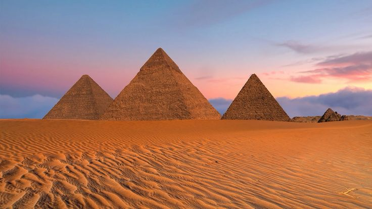

Найкрасивіші місця Єгипту
Проста веб-сторінка з фото, списком місць та перемикачем стилю.

Піраміди Гізи
Луксор і Долина царів
Червоне море (Хургада, Шарм-ель-Шейх)
Круїз по Нілу
Храм Абу-Сімбел
Оазис Сива
Біле та Чорне пустелі
Старе місто Каїра (хан ель-Халілі)
Змінити стиль